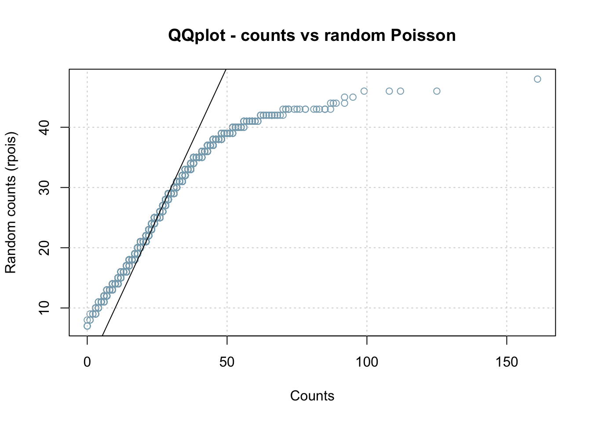

Practical – k-mer distributions
Probabilities and statistics for modelling 1 (STAT1)
Jacques van Helden
2020-02-20
Introduction
In this practical, we will count k-mer occurrences in DNA sequences of different organisms (one organism per sutdent), fit different theoretical distributions of probabilities onto the empirical distributions of counts, and test the goodness of fit for these alternative distributions.
Organisms
Each student will choose one organism of interest among the following ones.
| Taxon | Organism |
|---|---|
| Fungi | Saccharomyces_cerevisiae |
| Bacteria | Escherichia coli GCF 000005845.2 ASM584v2 |
| Mammalian | Homo sapiens GRCh38 |
| Mammalian | Mus musculus GRCm38 |
| Bird | Gallus gallus EnsEMBL |
| Fish | Danio_rerio_EnsEMBL |
| Insect | Drosophila melanogaster |
| Worm | |
| Plant | Arabidopsis thaliana.TAIR10.29 |
| Plant | Zea mays.AGPv3.29 |
| Apicomplexa |
Solutions
Working directory
On your computer, create a directory for this practical. I suggest to use a consistent naming for the different practicals of this course.
We will further create a sub-folder with the name of our organism of interest.
## Define your organism of interest
org <- "Homo_sapiens"
## Define a working directory
work.dir <- file.path("~", "CMB-STAT2_practicals", "kmer_distrib", org)
dir.create(work.dir, recursive = TRUE, showWarnings = FALSE)
## Print a message with the result directory
message("Result directory\t", work.dir)Counting k-mer occurrences in each promoter of a model organism
Open a connection to the Regulatory Sequence Analysis Tools (RSAT) teaching server : http://teaching.rsat.eu/
In the tool search box, type “retrieve sequence” and click on the corresponding tool.
In the retrieve-sequence form,
- click Mandatory inputs, enter the name your organism of interest, and check the option all genes of this organism;
- in Mandatory options, select upstream, and set the sequence limits from -1 to -500
- in Advanced options, make sure that this option is unchecked: Prevent overlap with neighbour genes (noorf)* 1
- click Run analysis and GO.
After a few seconds (or minutes) the result is displayed. Right-click on the sequence file (extension fasta) and open it in a separate tab to check its content.
Come back to the result page of retrieve-sequence. In the Next Step box below the result, click on the link to oligo-analysis. This will transfer your sequences to the oligo-analysis form.
- In the Sequence section, inactivate the option purge sequence.
- In the Oligmer counting mode, uncheck the option prevent overlapping matches.
- Select Count on single strand.
- For oligomer lengths, select 2 and uncheck the other lengths.
- In Results, check the option Occurrence table.
- Type your email address and select the mail output.
- Click GO.
After a few seconds (minutes), the RSAT server should display the result page, with links to the k-mer count table. Copy the URL of the result file.
Download the count table from RSAT
Let us define the name we will give to the local copy of the k-mer count table generated on the RSAT server in the previous steps.
## Define the path and the name of the local file
kmer.file <- file.path(work.dir, "2nt-ovlp-1str_Homo_sapiens.tab")One solution is to download manually the k-mer count table generated on the RSAT server, move it to the work directory, and rename it 2nt-ovlp-1str_Homo_sapiens.tab (to be adapted depending on your organism of interest).
Another possiblity is to use R command download.file() download it from the URL of the result file on the RSAT server.
## Note: this will only work for a few days, because the temporary files are removed from the server
temp.url <- "http://pedagogix-tagc.univ-mrs.fr/rsat/tmp/www-data/2020/02/17/oligo-analysis_2020-02-17.155035_zZ4IA4"
## Provide the arguments in the order of the function definition
download.file(temp.url, kmer.file)
## Equivalent : name the arguments
# download.file(url = temp.url, destfile = kmer.file)
## Note: named arguments can be provided in a different order without problem
# download.file(destfile = kmer.file, url = temp.url)Whichever method was chosen, check that the file is at the right place on your computed.
[1] "2nt-ovlp-1str_Homo_sapiens.tab"Load the k-mer count table in R
Use the finction read.table() to load the k-mer count table in a variable named kmer.table.
## Call the help for read.table()
# ?read.table
## Load the k-mer count table in a variable
kmer.table <- read.table(
file = kmer.file,
comment.char = ";", ## comment lines start with ";" in RSAT
header = TRUE, # the first row (after the comments) contain the column headers
row.names = 1, ## the first column contains row names but there might be homonyms
sep = "\t" ## column separator is the tabulation
)
## We set uppercases for the dinucleotide sequences, which were in lowercases in the original count table
names(kmer.table) <- toupper(names(kmer.table))Check the dimensions of this table.
[1] 60675 16## Number of k-mers
m <- ncol(kmer.table)
## Number of genes
n <- nrow(kmer.table)
## Print the result
print(paste0("Number of rows: ", n))[1] "Number of rows: 60675"[1] "Number of columns: 16"Check the column names
[1] "AA" "AC" "AG" "AT" "CA" "CC" "CG" "CT" "GA" "GC" "GG" "GT" "TA" "TC" "TG" "TT" [1] "AA" "AC" "AG" "AT" "CA" "CC" "CG" "CT" "GA" "GC" "GG" "GT" "TA" "TC" "TG" "TT"Display the first and last 10 lines of the k-mer count table.
AA AC AG AT CA CC CG CT GA GC GG GT TA TC TG TT
ENSG00000210049|Homo_sapiens_GRCh38|MT-TF 48 54 17 36 58 69 14 32 14 24 7 11 35 26 18 36
ENSG00000211459|Homo_sapiens_GRCh38|MT-RNR1 56 58 16 36 62 69 9 31 10 19 7 11 38 25 15 37
ENSG00000210077|Homo_sapiens_GRCh38|MT-TV 57 42 41 22 37 38 18 35 28 26 22 27 39 23 22 22
ENSG00000210082|Homo_sapiens_GRCh38|MT-RNR2 48 42 42 22 35 39 17 36 30 25 22 28 41 21 24 27
ENSG00000209082|Homo_sapiens_GRCh38|MT-TL1 52 41 32 34 40 40 19 29 28 16 23 23 38 32 16 34
ENSG00000198888|Homo_sapiens_GRCh38|MT-ND1 48 38 35 32 39 37 21 29 30 16 24 25 36 37 15 35 AA AC AG AT CA CC CG CT GA GC GG GT TA TC TG TT
ENSG00000128973|Homo_sapiens_GRCh38|CLN6 55 24 34 31 31 31 15 36 30 34 29 19 27 24 34 45
ENSG00000272269|Homo_sapiens_GRCh38|RP11-500C11.3 41 29 33 14 43 90 25 33 21 38 32 15 11 35 16 23
ENSG00000267091|Homo_sapiens_GRCh38|CTBP2P7 21 22 38 25 40 34 9 37 30 35 28 32 15 29 50 54
ENSG00000151655|Homo_sapiens_GRCh38|ITIH2 62 30 35 33 48 23 2 41 27 22 17 19 23 39 30 48
ENSG00000234159|Homo_sapiens_GRCh38|RBPMSLP 112 30 39 36 41 34 4 24 32 20 18 14 33 19 23 20
ENSG00000141338|Homo_sapiens_GRCh38|ABCA8 74 22 39 48 31 13 4 30 43 21 19 16 35 22 37 45Compute marginal statistics
Statistics per column (k-mer)
Tips: use the R function apply().
We will compute marginal statistics on the rows and columns of the count table. One possibility is to add columns and rows on this table, but this would not be very convenient for the subsequent computations to be performed on the counts. We will thus create two separate tables: one with the row-wise statistics, and another one with the column-wise statistics.
Rather than looping over each row or column of the count table, we can use the function apply()in order to compute a chosen statistics on each row (margin = 1) or column (margin = 2) of the table.
[1] 60675 16# View(kmer.table)
## Compute means per column (on the "second" margin)
col.means <- apply(kmer.table, 2, mean)
print(col.means) AA AC AG AT CA CC CG CT GA GC GG GT TA TC TG TT
40.51309 24.69333 36.14415 28.82729 35.02548 36.94124 14.57330 35.30629 30.15806 30.75028 36.17958 24.01994 24.42770 29.55186 34.20470 37.63466 We can run the apply()function in the same way to compute the other descriptive statistics (median, variance, …) and store each result in a separate vector. However, it would be more convenient to dispose of a single structure containing all the statistics for each column. For this, we use data.frame() to create a data frame with one column per column per computed statistics, and one row per k-mer.
## Compute a table summarising the statistics per k-mer
## (marginal stats on the columns)
stats.per.kmer <- data.frame(
mean = apply(kmer.table, 2, mean),
sd = apply(kmer.table, 2, sd),
var = apply(kmer.table, 2, var),
min = apply(kmer.table, 2, min),
p05 = apply(kmer.table, 2, quantile, 0.05),
Q1 = apply(kmer.table, 2, quantile, 0.25),
median = apply(kmer.table, 2, median),
Q3 = apply(kmer.table, 2, quantile, 0.75),
p95 = apply(kmer.table, 2, quantile, 0.95),
max = apply(kmer.table, 2, max),
sum = apply(kmer.table, 2, sum)
)
kable(stats.per.kmer, caption = "Column-wise means of the k-mer count table. ")| mean | sd | var | min | p05 | Q1 | median | Q3 | p95 | max | sum | |
|---|---|---|---|---|---|---|---|---|---|---|---|
| AA | 40.51309 | 20.706267 | 428.74949 | 0 | 10 | 25 | 39 | 54 | 77 | 186 | 2458132 |
| AC | 24.69333 | 6.860027 | 47.05997 | 0 | 14 | 20 | 24 | 29 | 36 | 161 | 1498268 |
| AG | 36.14415 | 9.103262 | 82.86939 | 0 | 23 | 30 | 36 | 42 | 51 | 139 | 2193046 |
| AT | 28.82729 | 14.821645 | 219.68117 | 0 | 7 | 17 | 28 | 39 | 54 | 186 | 1749096 |
| CA | 35.02548 | 8.344418 | 69.62931 | 0 | 22 | 30 | 35 | 40 | 48 | 173 | 2125171 |
| CC | 36.94124 | 20.350163 | 414.12914 | 0 | 12 | 22 | 33 | 47 | 76 | 208 | 2241410 |
| CG | 14.57330 | 16.515726 | 272.76920 | 0 | 1 | 3 | 8 | 20 | 51 | 113 | 884235 |
| CT | 35.30629 | 8.887525 | 78.98810 | 0 | 22 | 29 | 35 | 41 | 50 | 137 | 2142209 |
| GA | 30.15806 | 8.455523 | 71.49587 | 0 | 18 | 25 | 30 | 35 | 44 | 139 | 1829840 |
| GC | 30.75028 | 15.779050 | 248.97841 | 0 | 12 | 19 | 27 | 38 | 63 | 113 | 1865773 |
| GG | 36.17958 | 19.283920 | 371.86955 | 0 | 12 | 22 | 33 | 46 | 73 | 208 | 2195196 |
| GT | 24.01994 | 6.850075 | 46.92352 | 0 | 14 | 20 | 24 | 28 | 35 | 130 | 1457410 |
| TA | 24.42770 | 13.962177 | 194.94237 | 0 | 5 | 13 | 23 | 34 | 49 | 184 | 1482151 |
| TC | 29.55186 | 8.177379 | 66.86953 | 0 | 17 | 24 | 29 | 34 | 43 | 139 | 1793059 |
| TG | 34.20470 | 8.940656 | 79.93532 | 0 | 20 | 28 | 34 | 40 | 48 | 144 | 2075370 |
| TT | 37.63466 | 19.433749 | 377.67061 | 0 | 10 | 23 | 36 | 50 | 72 | 163 | 2283483 |
Warning about R sd() and var() functions
Beware: the R functions sd and var do not compute the standard deviation and variance of the numbers provded! Instead, they consider that the data provided are a sample drawed from a population, and the return an estimate of the standard deviation or variance of this population.
So, instead of the sample variance
\[s^2 = \sum_{i=1}^n \frac{1}{n}(x - \bar{x})^2\]
They estimate the variance of the population corrected for the systematic bias of sample variance.
\[\hat{s^2} = \sum_{i=1}^n \frac{1}{n-1}(x - \bar{x})^2\]
For this exercise, this is actually what we want, since we can consider that the 60675 genes of our organism of interest are a sampling of all the genes that might be found in organisms of the same taxon. In any case, the impact of the correction is negligible with such a large number of genes (\(n = 60675\)).
\[\frac{n}{n-1} = 1.0000165\]
Analyse the relationships between the mean and the variance
Poisson: variance = mean Binomial: variance < mean XXX: variance > mean
plot(stats.per.kmer$mean, stats.per.kmer$var,
xlab = "Mean of the counts per promoters",
ylab = "Variance of the counts per promoters",
las = 1, panel.first = grid(),
main = "Dinucleotide counts in human promoters\nVariance versus mean plot",
xlim = c(10,50), ylim = c(0,500), cex = 0)
text(x = stats.per.kmer$mean, y = stats.per.kmer$var, labels = rownames(stats.per.kmer))
abline(a = 0, b = 1)Mean-variance plot for dinucleotide counts in all human promoters. The line indicates the variance/mean relationship in Poisson. distributions.
Statistics per gene (row)
## Compute a table summarising the gene-wise (row-wise) statistics of the k-mer count table
stats.per.gene <- data.frame(
mean = apply(kmer.table, 1, mean),
sd = apply(kmer.table, 1, sd),
var = apply(kmer.table, 1, var),
min = apply(kmer.table, 1, min),
Q1 = apply(kmer.table, 1, quantile, 0.25),
median = apply(kmer.table, 1, median),
Q3 = apply(kmer.table, 1, quantile, 0.75),
max = apply(kmer.table, 1, max),
sum = apply(kmer.table, 1, sum)
)We can inspect the sum of counts per gene.
| Var1 | Freq |
|---|---|
| 499 | 60658 |
| 497 | 4 |
| 482 | 1 |
| 476 | 1 |
| 465 | 1 |
| 456 | 1 |
| 398 | 1 |
| 393 | 1 |
| 249 | 1 |
| 194 | 1 |
| 142 | 1 |
| 138 | 1 |
| 102 | 1 |
| 24 | 1 |
| 0 | 1 |
For almost all genes, the sum of k-mer counts is \(n = L -1\), where \(L\) is the sequence length. This is logical since there is no dinucleotide starting at the last position of a sequence. More generally, for a k-mer of size \(k\), the number of possible positions is \(n = L - k + 1\).
The very few cases of sequences having a smaller sums of counts result from the presence of ambiguous nucleotides (represented by the symbol N) in the genome sequence. For this exercise, we will suppress these genes because our models rely on the hypothesis that the sum of counts per gene is constant.
## Filter out the genes having an incorrect sum of counts
n <- max(stats.per.gene$sum)
## Count the number of genes with the correct sum of counts
sum(stats.per.gene$sum == n)[1] 60658[1] 17## Filter out the genes with incorrect sums of counts
kmer.table <- kmer.table[stats.per.gene$sum == n, ]
dim(kmer.table)[1] 60658 16Drawing empirical distributions of counts
Draw an histogram with the distribution of counts for a given k-mer.
The simplest way to generate a histogram is to use the hist() function. Here is the result with the default parameters.
kmer <- "AG" # Select a k-mer
counts <- kmer.table[, kmer] # select the counts for this k-mer
range(counts)[1] 0 139Counts per sequence in all human promoters.
We can fine-tune the parameters in order to get a more informative representation, by specifying custom breaks.
## Draw a nice and informative histogram
hist(x = counts,
breaks = 0:max(counts + 1),
col = "#44DDFF", border = "#44DDFF",
las = 1,
ylab = "Number of promoters",
xlab = "K-mer counts",
main = paste0(kmer, " counts in promoters"))
Counts per sequence in all human promoters.
Generate a figure with 4 x 4 panels to depict the histograms of the 16 k-mers
par(mfrow = c(4,4))
par(mar = c(4.1, 5.1, 4.1, 1.1))
for (i in 1:16) {
kmer <- names(kmer.table)[i]
counts <- kmer.table[, i] # select the ith column of the k-mer table
## Draw a nice and informative histogram
hist(x = counts,
breaks = 0:max(counts + 1),
col = "#44DDFF", border = "#44DDFF",
las = 1,
ylab = "Number of promoters",
xlab = "K-mer counts",
main = paste0(toupper(kmer), " counts in promoters"))
}Dinucleotide counts per sequence in all human promoters.
Use other graphical representations to get an insight of the k-mer count distributions (boxplots, violin plots)
Boxplot
The funciton boxplot() provides an informative summary of the data.
Boxplot of dinucleotide counts in all promoters.
We can fine-tue the parameters to enhance the readability
boxplot(x = kmer.table[,order(stats.per.kmer$median)],
horizontal = TRUE,
las = 1,
col = "#44DDFF",
main = "Dinucleotide distributions",
xlab = "Counts")
Boxplot of dinucleotide counts in all promoters.
Alternative: sort by variance.
boxplot(x = kmer.table[,order(stats.per.kmer$var)],
horizontal = TRUE,
las = 1,
col = "#44DDFF",
main = "Dinucleotide distributions",
xlab = "Counts")Boxplot of dinucleotide counts in all promoters.
Violin plot
We can use the R function vioplot() to generate a violin plot. This requires to install the R package vioplot, if it is not already done.
## Check if the vioplot package is already installed
if (!require(vioplot)) {
## Install the vioplot package
install.packages("vioplot")
}
library(vioplot) ## Load the vioplot package
# help(package = vioplot) # Get help on the package
# help(vioplot) # Get help on the vioplot function
vioplot(kmer.table)Violin plot of dinucleotide counts in promoter sequences
Let us fine-tune the parameters to get a pretty violin plot.
Violin plot of dinucleotide counts in promoter sequences
Violin plot of dinucleotide counts in promoter sequences
Exploring k-mer count distributions in promoter sequences
Compute a vector with the relative frequency of each k-mer in all the sequences.
Compute a table with the relative frequencies of k-mers per sequence, and compute similar summary statistics per column on this relative frequency table.
Write a brief interpretation of the results.
Fitting
Encapsulate the pretty histogram in an R function
For the rest of this tutorial, we will have to draw several histograms of k-mer count distributions. Since we are satisfied of the fine-tuned histogram above, one possibility is to include it in a function, that we will be able to recall later rather than having to re-type the full code for each usage.
We will properly document this function with the roxygen2 standard. This will enable us to incorporate this function in a custom R package if we wish.
We can also include parameters (defined in the signature of the function) in order to make its use more flexible.
Moreover, this function will return an object (of class “histogram”) with the numerical values of the histogram (breaks, frequencies, counts, …).
#' @title K-mer count histogram
#' @author Jacques van Helden
#' @description Draw an histogram with the distribution of a vector of counts for a given k-mer.
#' @param counts a vector of counts
#' @param kmer the sequence of the oligonucleotide (k-mer) to be displayed in the title
#' @param class.interval=1 class interval (breaks are automatically computed)
#' @param col="#44DDFF" fill color for the histogram rectangles
#' @param border="#22BBFF" border color for the histogram rectangles
#' @param main=paste0(kmer, " counts in promoters")
#' @param ... all the other arguments are passed to the hist function
#' @return an object of type histogram returned by the hist() function
#' @export
kmer.hist <- function(counts,
kmer,
class.interval = 1,
col = "#44DDFF",
border = "#44DDFF",
main = paste0(kmer, " counts in promoters"),
...) {
h <- hist(x = counts,
breaks = seq(from = 0,
to = max(counts + class.interval),
by = class.interval),
col = col,
border = border,
las = 1,
ylab = "Number of promoters",
xlab = "K-mer counts",
main = main,
...)
## Return the histogram values
return(h)
}We can then call this function with a given k-mer.
Distribution of k-mer counts in promoter generated with our custom funciton kmer.hist().
We can then re-use it with wider breaks.
kmer <- "TT"
counts <- kmer.table[, kmer]
hist.values.ci5 <- kmer.hist(counts = counts,
kmer = kmer,
border = "#0088FF",
class.interval = 5)Distribution of k-mer counts in promoter generated with our custom funciton kmer.hist() with class intervals of size 5.
We can now extract the values of the histogram, for example the class midpoints and the counts per class.
[1] "histogram"[1] "breaks" "counts" "density" "mids" "xname" "equidist"We can print the midpoints of the class intervals.
[1] 0.5 1.5 2.5 3.5 4.5 5.5 6.5 7.5 8.5 9.5 10.5 11.5 12.5 13.5 14.5 15.5 16.5 17.5 18.5 19.5 20.5 21.5 22.5 23.5 24.5 25.5 26.5 27.5 28.5 29.5 30.5 31.5 32.5 33.5 34.5 35.5 36.5 37.5 38.5 39.5 40.5 41.5 42.5 43.5 44.5 45.5 46.5 47.5 48.5
[50] 49.5 50.5 51.5 52.5 53.5 54.5 55.5 56.5 57.5 58.5 59.5 60.5 61.5 62.5 63.5 64.5 65.5 66.5 67.5 68.5 69.5 70.5 71.5 72.5 73.5 74.5 75.5 76.5 77.5 78.5 79.5 80.5 81.5 82.5 83.5 84.5 85.5 86.5 87.5 88.5 89.5 90.5 91.5 92.5 93.5 94.5 95.5 96.5 97.5
[99] 98.5 99.5 100.5 101.5 102.5 103.5 104.5 105.5 106.5 107.5 108.5 109.5 110.5 111.5 112.5 113.5 114.5 115.5 116.5 117.5 118.5 119.5 120.5 121.5 122.5 123.5 124.5 125.5 126.5 127.5 128.5 129.5 130.5 131.5 132.5 133.5 134.5 135.5 136.5 137.5 138.5 139.5 140.5 141.5 142.5 143.5 144.5 145.5 146.5
[148] 147.5 148.5 149.5 150.5 151.5 152.5 153.5 154.5 155.5 156.5 157.5 158.5 159.5 160.5 161.5 162.5 163.5And the corresponding counts.
[1] 92 100 161 232 298 377 457 481 582 684 721 765 818 874 872 996 988 1031 1043 1092 1097 1156 1113 1150 1145 1128 1203 1170 1205 1182 1221 1120 1182 1133 1145 1204 1187 1126 1130 1143 1074 1067 1097 1037 1052 976 959 955 907 867 887 817 827 720 717 698 635 661 635
[60] 570 568 519 501 486 406 379 361 343 338 317 293 273 223 225 212 187 166 161 140 132 120 116 99 94 104 85 77 76 50 66 48 51 44 35 30 39 27 29 21 21 10 21 19 23 12 10 14 12 15 10 3 11 13 4 4 9 4 2
[119] 3 2 3 2 1 1 0 1 7 0 1 3 3 0 1 2 2 0 0 1 0 1 0 0 0 0 0 0 0 1 0 0 1 0 0 0 0 0 0 0 0 1 0 0 1 0We can also use this information to draw a custom plot of the distribution (for example a frequency polygon).
plot(hist.values$mids, hist.values$counts,
las = 1, xlab = "Number of sequences",
ylab = "Counts per sequence",
type = "l", col = "#008800",
lwd = 3,
main = paste0(kmer, " counts\nFrequency polygon"))
grid() # Add a grid to the plotDistribution of counts for the TT dinucleotide in Human promoter sequences. Representation. as frequency polygon.
Fit a Poisson distribution on each empirical distribution of k-mer counts.
- How do you choose the parameters?
- Draw the fitted Poisson distribution over the histogram of empirical distribution (observed k-mer occurences)
**Tips:**
- in order to add some plot over an existing plot, you can use the `lines()` function
- you can also use specific options to draw histogram-like lines: `lines(x, y, type = "h").
The Poisson distribution is defined by a single parameter: the expected mean \(\lambda\) (the Greek letter “lambda”). Noteworth, the variance of a Poisson distribution equals its mean.
## Select a kmer and its counts
kmer <- "GA" ## Select an arbitrary k-mer
counts <- kmer.table[, kmer]
ci <- 2
## Estimate lambda (mean of the Poisson) as the mean of the counts
lambda <- mean(counts)
## Compute the Poisson Probability Mass Function
X <- 0:max(counts) ## Compute the values covered by the k-mer counts
# length(X)
poisson.pmf <- dpois(x = X, lambda = lambda)
# sum(poisson.pmf) # Validation : this should approximte 1
## Compute expected number of genes for each count value
poisson.exp <- poisson.pmf * nb.genes
# sum(poisson.exp) # Validation: this should approximate n## plot the histogram
h <- kmer.hist(counts, kmer,
ylim = c(0, max(poisson.exp)),
class.interval = 1, col = "#BBBBBB", border = "#BBBBBB",
main = paste0("Poisson fit on ", kmer, " counts"))
lines(X, poisson.exp, col = "red", lwd = 2)Fitting of a Poisson distribution on dinucleotide counts
An alternative is to draw the lines as a histogram rather than a polygon frequency.
## plot the histogram
h <- kmer.hist(counts, kmer,
ylim = c(0, max(poisson.exp)),
class.interval = 1, col = "#BBBBBB", border = "#BBBBBB",
main = paste0("Poisson fit on ", kmer, " counts"))
lines(X, poisson.exp, col = "red", lwd = 1, type = "h")Fitting of a Poisson distribution on dinucleotide counts
We can now generate the same drawing for each k-mer.
par(mfrow = c(4, 4))
for (i in 1:m) {
kmer <- names(kmer.table)[i]
counts <- kmer.table[, kmer]
## plot the histogram
h <- kmer.hist(counts, kmer,
ylim = c(0, max(poisson.exp)),
class.interval = 1, col = "#BBBBBB", border = "#BBBBBB",
main = paste0("Poisson fit on ", kmer, " counts"))
lines(X, poisson.exp, col = "red", lwd = 0.5, type = "h")
}Poisson fit on dinucleotide counts from Human promoter sequences.
Q-Q plots
kmer <- "TT"
counts <- kmer.table[, kmer]
lambda <- mean(counts)
X <- 0:(max(counts))
## Generate random counts that follow a Poisson loaw
rcounts <- rpois(n = length(counts), lambda = lambda)
## Draw a Q-Q plot with the random counts versus actual counts
qqplot(x = counts, y = rcounts,
main = "QQplot - counts vs random Poisson",
col = "#88AABB",
xlab = "Counts",
ylab = "Random counts (rpois)")
grid()
abline(a = 0, b = 1)
Fitting a binomial distribution
Fitting a normal distribution
Fitting a negative binomial
- Estimate the goodness of fit for these distributions.
Note: normally it is recommended to check this option, but we intently inactivate it in order to get sequences of the same sizes. ↩